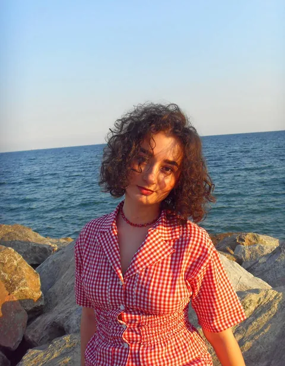
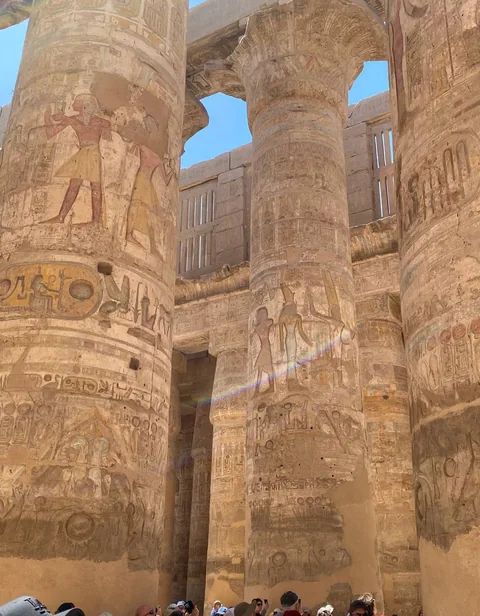
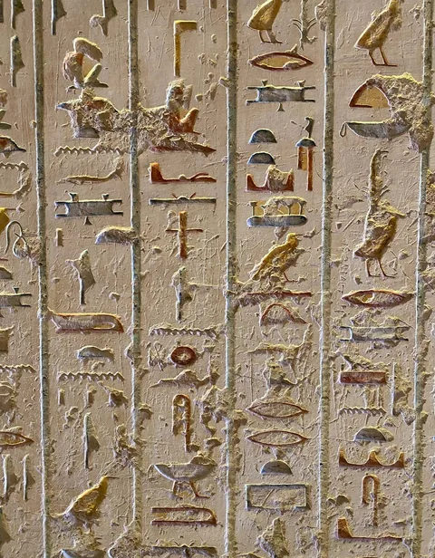
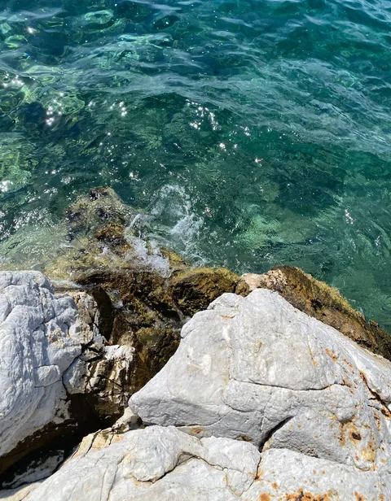
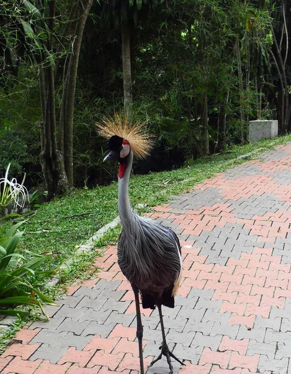
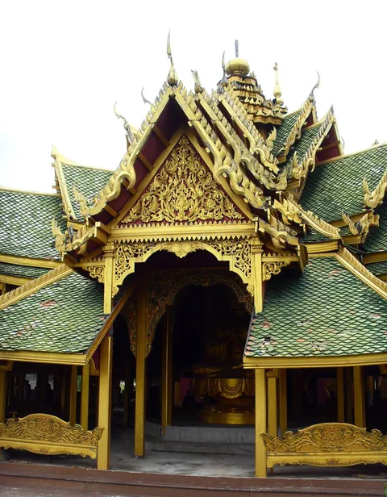
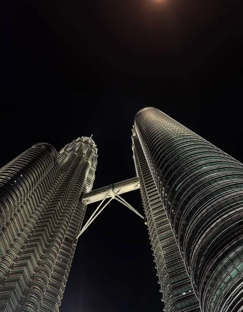
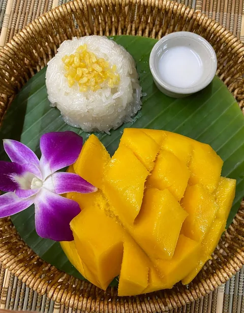
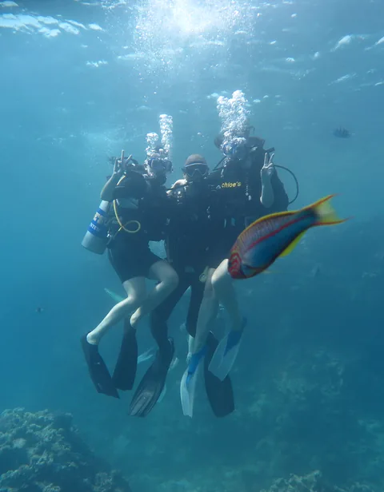
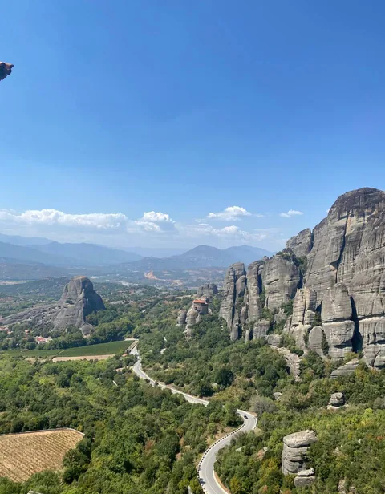

The story behind
the screens
The beginning
There’ll be no story about how I was super creative as a kid and that’s why I became a designer.
After school, I went to study Computer Science. It felt like the right direction, because I loved taking my PC apart and figuring out how things worked. But during my first year, I realized I didn’t enjoy writing code nearly as much as I’d expected.
So in 2022, I signed up for my first online course, Web Design Basics. I was juggling university and design classes at the same time, which was honestly a lot. Somehow I finished both: the course and my first year.
Then I joined a more advanced course, UI/UX Design Pro, and that’s when it clicked. Design was something I genuinely loved: a place where I could solve problems, be creative, and express myself all at once.
First experience
My first job came in 2023, while I was still at university, when I joined the Spacebring team as a designer.
I genuinely thought I knew a lot about design. Turns out… not even close. Real knowledge comes from practice, and at Spacebring I worked on things no course had ever covered.
Spacebring gave me room to keep growing, and over those three years I also completed the Web Design Junior and Marketing Design courses.
In 2026, my chapter with Spacebring came to an end, and I’m ready for the next one.
Outside of work
I’m a traveler at heart. It’s what makes me feel most alive. I love exploring new cultures, trying food I’ve never had before, and meeting people from completely different parts of the world.
My little old Samsung digital camera comes with me everywhere. I love the grainy, imperfect photos it takes. They always feel a bit more real than the ones on my phone.
Music is a huge part of my life too. I’m listening to something right now, while writing this. It’s with me through almost everything: workouts, cooking, walks, work… pretty much life. My playlist is all over the place: Guns N’ Roses, Michael Jackson, Justin Timberlake, A$AP Rocky, Lana Del Rey, Rihanna, and many more.